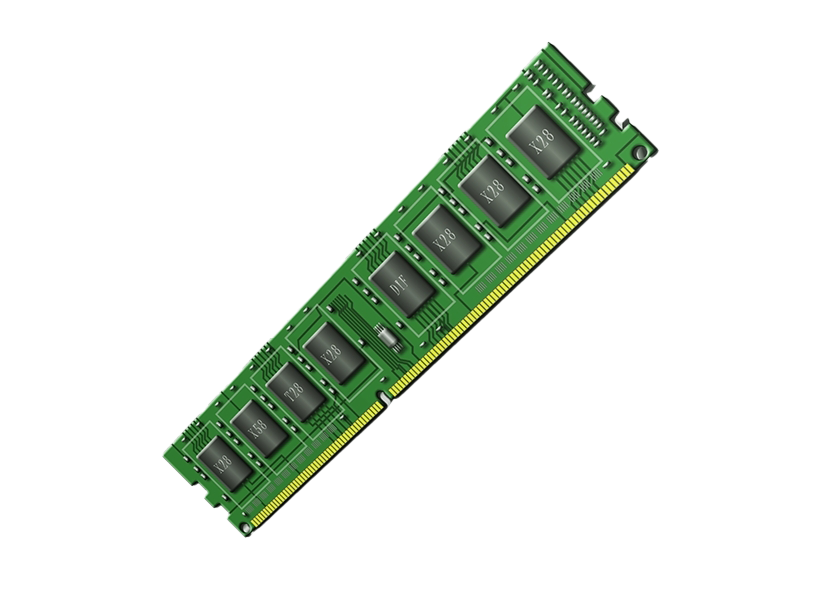

|
|
| FORM PEMBELIAN KOMPUTER DISINI!! |
RAM DDR1
|
RAM DDR1, atau DDR (Double Data Rate) generasi pertama, adalah jenis memori akses acak dinamis yang pertama kali diperkenalkan untuk menggantikan SDRAM (Single Data Rate Synchronous DRAM). DDR1 bekerja dengan menggandakan jumlah transfer data per siklus clock dibandingkan dengan SDRAM, yang berarti data dapat ditransfer baik pada naiknya maupun turunnya sinyal clock. Dengan teknologi ini, DDR1 mampu menyediakan kecepatan data yang lebih tinggi dengan efisiensi daya yang relatif baik dibandingkan teknologi pendahulunya. Kecepatan DDR1 bervariasi antara 200 hingga 400 MT/s (MegaTransfers per detik), dengan frekuensi operasional berkisar dari 100 MHz hingga 200 MHz. Namun, meskipun DDR1 memberikan peningkatan performa dibandingkan SDRAM, teknologi ini memiliki keterbatasan yang membuatnya segera digantikan oleh DDR2, yang menawarkan kecepatan lebih tinggi dan efisiensi daya lebih baik. DDR1 juga memiliki tegangan operasi yang relatif lebih tinggi, sekitar 2,5V, yang membuatnya lebih boros daya jika dibandingkan dengan generasi RAM yang lebih baru. Karena keterbatasan ini, DDR1 sekarang sudah dianggap usang dan umumnya hanya ditemukan pada komputer dan perangkat yang lebih tua, sementara komputer modern telah beralih ke DDR4 atau DDR5 yang jauh lebih cepat dan efisien dalam konsumsi daya. |
 |